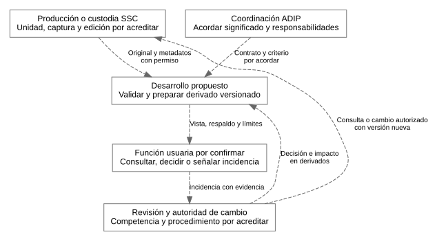

Ricardo Alfonso Graffe Garcia · A01664904 · P3002B
Se conservan entrevistas y codificación. Esta revisión hace visibles síntesis, perfiles, historias, metadatos, contratos y decisiones; añade un protocolo espacial futuro. Los vínculos funcionan después de extraer el ZIP completo.
Todas las flechas son propuestas; origen, unidades y autoridad requieren acreditación.

La conformidad integral FAIR, la revisión humana y la validación de utilidad permanecen pendientes. La matriz de recomendaciones no es una calificación.